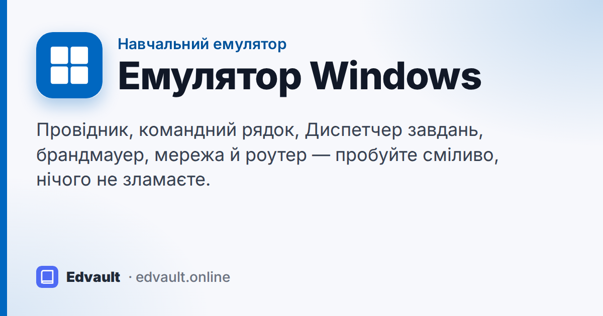
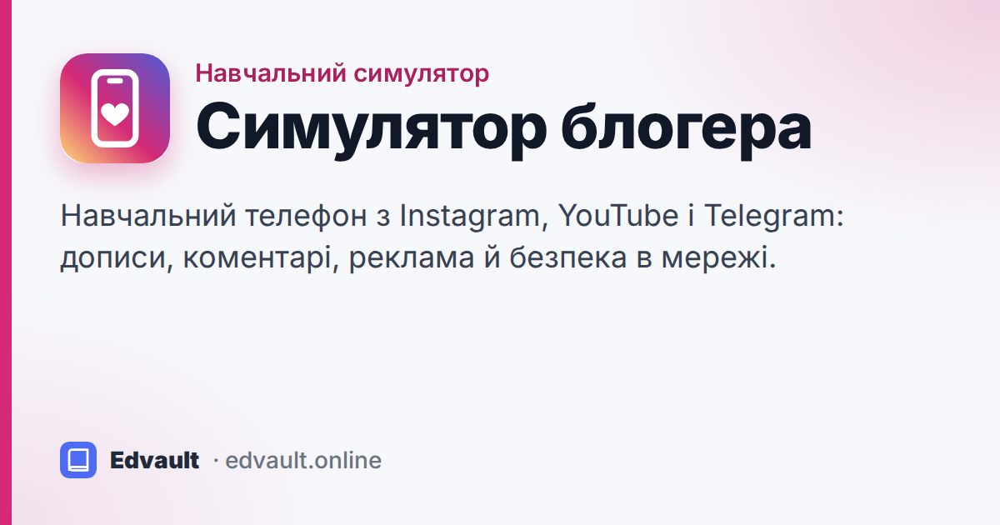
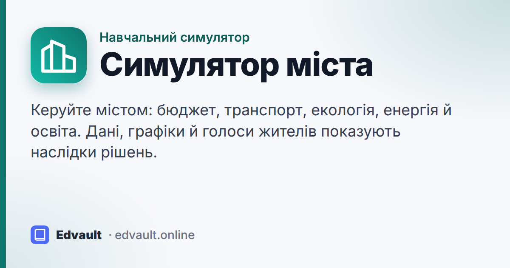
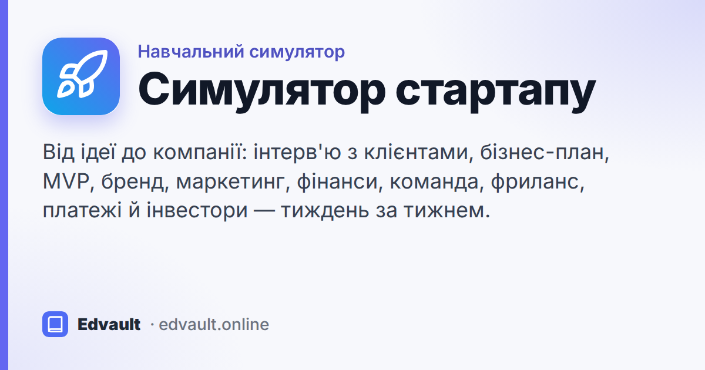

Емулятори Edvault
Навчальні симулятори для уроків: пробуйте сміливо — нічого не зламається. Працюють просто в браузері, без реєстрації, а гру можна зберегти у файл.

Емулятор Windows
Провідник, командний рядок, Диспетчер завдань, мережа, роутер і брандмауер. Для комп'ютера й планшета.

Симулятор блогера
Телефон із соцмережею, відеоплатформою й месенджером: дописи, коментарі, реклама й безпека в мережі.

Симулятор міста
Бюджет, транспорт, екологія, енергія й освіта. Дані, графіки й голоси жителів показують наслідки рішень.

Симулятор стартапу
Від ідеї до компанії: розмови з клієнтами, перша версія продукту, реклама, гроші, команда й інвестори.